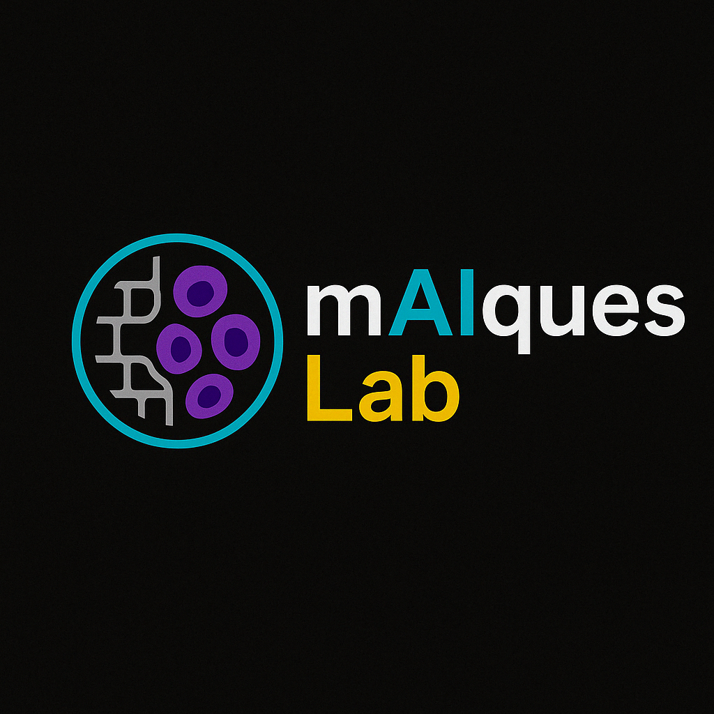

Decoding the structural and spatial complexity of the extracellular matrix (ECM) to enable earlier cancer detection and personalized therapies through spatial omics and AI.
The mAIques Lab, led by Dr. Oscar Maiques, investigates how changes in ECM alignment and architecture drive cancer progression. We combine spatial transcriptomics, imaging mass cytometry, AI-based tissue analysis, and advanced 3D models to identify early transformation signatures in melanoma, pancreatic, and breast cancer.
Our work bridges fundamental discovery with translational application, seeking to reveal how the microenvironment primes malignancy.
We adopt and develop cutting-edge tools in spatial biology and machine learning.
Our goal is to understand tumor heterogeneity and microenvironment dynamics at single-cell resolution.
We work across disciplines and institutions to enhance clinical relevance.
Our research informs diagnostics, prognostics, and future therapeutic strategies.
The mAIques Lab is based at the Centre for Cancer Biomarkers & Biotherapeutics within the Barts Cancer Institute at Queen Mary University of London.
We are part of the CRUK City of London Centre network, which brings together leading institutions for cancer research across London.
We envision a future where spatial and mechanical features of the tumour microenvironment become routine clinical biomarkers. Our aim is to redefine early detection by capturing subtle changes in ECM and cell–cell interactions, powered by interpretable AI models. Ultimately, we want to shift the diagnostic paradigm toward spatially informed precision medicine.